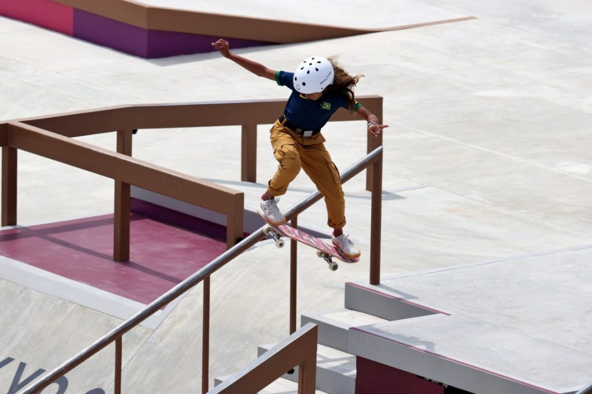
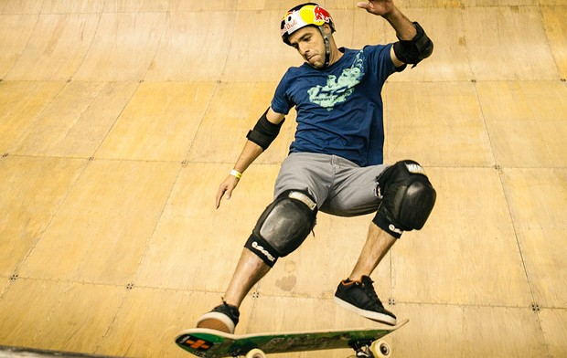

Características
O Skate é um dos esportes radicais mais praticados do mundo. Consiste basicamente em realizar manobras deslizando e equilibrando-se em um skate, que é uma prancha com dois eixos, rolamentos e quatro rodas pequenas. Esse esporte vem crescendo exponencialmente nos últimos anos, atraindo, consequentemente, diversos patrocinadores e tornando os campeonatos cada vez mais disputados. O skate normalmente é praticado na rua ou em lugares específicos, como os skate parks.
Sua origem nasce por volta dos anos 1960, na Califórnia, Estados Unidos, e foi criado por surfistas como uma brincadeira para quando não houvesse ondas no litoral. Os mesmos tentavam imitar as manobras de Surf usando rodas e eixos montados em pranchas de madeira. Os primeiros skates oficiais e campeonatos surgiram em 1965, no entanto, o esporte ganhou maior visibilidade somente nos anos 90, quando o norte-americano Tony Hawk realizou uma revolução com suas manobras, sendo considerado até hoje o maior skatista de todos os tempos.
O esporte oferece vários benefícios ao corpo, como fortalecimento do sistema respiratório e também o aeróbico. Além desses, a prática em si pode ocasionar:
- Melhora da coordenação motora e equilíbrio;
- Ganho de condicionamento físico e aeróbico;
- Desenvolvimento da flexibilidade;
- Queima de calorias e emagrecimento;
- Aumento de força;
- Melhora do sistema cardiovascular;
- Aumento da concentração;
- Adoção de estilo de vida mais saudável;
- Desenvolvimento do condicionamento para a prática desportiva;
- Alívio de estresse, ansiedade e depressão;
- Promoção da socialização;
- Aumento da felicidade.
Figura 1 - Olímpiadas 2021 - Modalidade "Skate"

Fonte: BBC
Informações específicas da prática
Não há uma regra que estabeleça uma “receita” do que deve ser feito para vencer no Skate, normalmente o ganhador será aquele que demonstrar melhor desempenho em suas manobras, sendo avaliados por juízes. Dentre as modalidades do skate estão:
- Freestyle – manobras feitas em sequência, no chão;
- Down Hill Speed – descida de ladeiras na maior velocidade possível, tendo o tempo cronometrado;
- Downhill Slide – descida de ladeiras em alta velocidade, realizando manobras de derrapagem (slides);
- Slalom - o skatista passa através do circuito, alternado entre os cones da esquerda e da direita. O tempo de descida é cronometrado e penalidades são adotadas se o competidor falhar;
- Vertical - é praticada em pista no formato de U, e pode ser subdividida em outras modalidades, variando sempre as condições da pista;
- Street Style (skate de rua) – na modalidade mais praticada em todo o mundo, os bancos, corrimões, escadas das ruas das cidades são utilizadas como obstáculos para o skate;
- Park - Trata-se de um bowl (estilo que remete a piscinas vazias) com complexidade: transições acima de três metros, banks e alguns elementos de street. Os obstáculos “interagem” entre si, ou seja, o skatista consegue completar uma manobra e entrar em outra transição para emendar outras;
- Mini-rampas – praticado em rampa que mistura os estilo Street e Vertical (paredes pouco inclinadas);
- Mega Rampa – é uma das modalidades mais radicais e como o próprio nome indica, os praticantes descem por uma rampa gigantesca.
Normalmente as competições duram dois dias, onde no primeiro dia ocorre a fase classificatória e no segundo, os melhores skatistas tem duas chances de realizar suas manobras. Aquele que somar mais pontos na mesma volta vence.
Vale destacar que, para usufruir dos benefícios dessa prática, são necessários diversos métodos e proteções para a segurança do praticante. Com base nisso, a utilização de equipamentos de segurança como o capacete, joelheira e cotoveleira se tornam essenciais para proteção em caso de quedas.
Figura 2 - Equipamentos de Segurança

Fonte: Globo - Eu Atleta
Local regional para praticar esta modalidade
Na verdade, o Skate pode ser praticado em diversas localidades, seja nas ruas, em casa ou em outros lugares, pois há vários estilos e modos de prática diferentes. Mas, há em Erechim um local específico para praticar o esporte, que é uma pista de skate. Essa pista possui diversas rampas e obstáculos que são utilizados ao andar de skate, sendo um bom local de utilização pública.
Praça Daltro Filho (Avenida Pedro Pinto de Souza 329 - Centro - Erechim - RS)
Fonte: Figuras dos autores.
Curiosidades sobre a prática
- O skate é o 6º esporte mais popular do planeta e o 7º no Brasil em relação ao número de participantes;
- Apesar de forte nos Estados Unidos, o Brasil arrasa nas pistas e tem um penta-campeão mundial e tri-campeão europeu de skate;
- No Brasil são quase 4 milhões de skatistas, onde a maioria dos praticantes têm entre 11 e 20 anos e 10% desse número já são meninas;
- A Tóquio 2020 foi a primeira aparição do skate nos Jogos Olímpicos;
- A mais jovem medalhista olímpica do Brasil é uma skatista chamada Rayssa Leal. A maranhense de 13 ganhou a medalha de prata na categoria skate street feminino;
- Mais de 18 milhões de pessoas têm um skate nos Estados Unidos, no entanto apenas 15% são mulheres;
- No Brasil, a primeira pista de skate estreou em 4 de dezembro de 1976, na praça Ricardo Xavier da Silveira, em Nova Iguaçu, no Rio de Janeiro.